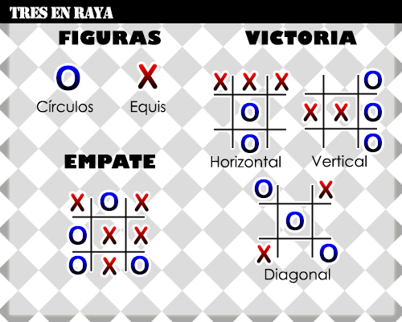

El juego de las Tres en Raya es uno de los juegos de estrategia más sencillos que hay, y es perfecto para que los niños empiecen a utilizar su razonamiento lógico…
Cada jugador elige entre rojo o azul, y en su turno debe seleccionar un espacio, intentando conseguir 3 seguidas en una línea vertical, horizontal o diago nal.
Una vez se llenan todos los espacios se termina la partida, finalizando en tablas si ninguno consigue enlazar tres de sus fichas seguidas.
